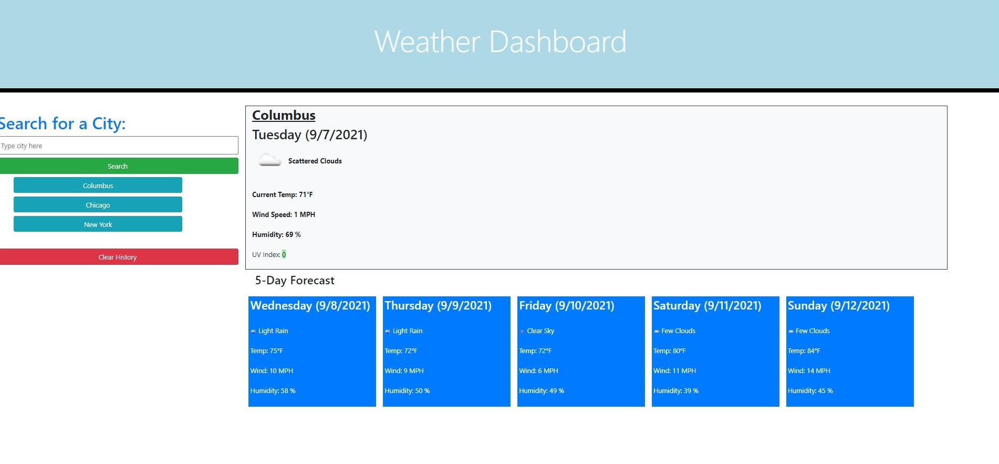

I am currently enrolled in an Ohio State University coding boot camp while I hold a day job as a Senior Technical Manager at Chuck E. Cheese. I troubleshoot and repair arcade machine, an animatronic show and many other restaurant equipment. I joined the bootcamp to move my education from computer hardware to software. I love learning new things and cannot wait to join a company and use all my background to develope new and exciting web pages.
I COMMIT myself
to PUSH a company further
About Me
Class Projects
Password Generator

Password Generator Repo Link
This website was made to generator random passwords based on the criteria given by prompts that a user answers.
The criteria that is asked to the user is:
- Number of characters needed for the password be (8 -128).
- Use of uppercase letters?
- Use of lowercase letters?
- Use of special characters?
- Use of numbers?
Weather Dashboard
Weather Dashboard Repo Link
This website was made to give a user a way to search a city and find the current weather of that city which includes the date, weather forecast icon with description, current temperature, wind speed, Humidity and UV index by number and color depending on the level of severity. Below the current weather the user will find a five day forecast that will show weather forecast icon with description, temperature, wind speed humidity for each of the five days. The searches will save to local storage and create a button below the search bar. When clicked on the previous search button the weather for the city displayed in the button will display again. There is also an included clear history button to remove all previous searches.
Coding Quiz

Coding Quiz Repo Link
This website was made create a quiz for a user to take. The user will have sixty seconds to complete ten questions. If a user finishes the questions or time runs out the website will ask the user for their initials and show their result of the quiz. As a user answers the questions the website will display if the answers are correct or incorrect. If an answer is incorrect the user will lose ten seconds from the timer. The users initials will be saved with their score to the local drive. A user can view the high scores from a menu on the left side of the screen.
Group Project (Evening Planner)

Health and Wellness Repo Link
This website was made to give a user a way to search through foods to create a menu for dinner for one calendar week. A user will search for any type of food and see 4 results. Each result will show a photo and text decription of each food product. The search results will also contain a selector box with a drop down menu for each day of the week. The user can add a food to a particular day by using the drop down menu. If a user wants more search results they may enter a new search or click on the "Next Results" button for four more results. A user can had exercises to each day of the week. A user does this by clicking the "Choose a Workout" button. This button will display four random exercise results. Just like the food results a user can add exercises to each day of the week by using the drop down menu selector included with each exercise result. Any time during the selection process a user can click on the save button on the bottom of a particular day to save their selections to local storage for that day. A button has also been included to clear the day of all food and exercises and delete that information from local storage. When you user refreshes the page the items saved to local storage will populate to their correct day.
Contact Information
Cell Phone: (614) 313-4769
Email: shawnsmm@gmail.com
LinkedIn